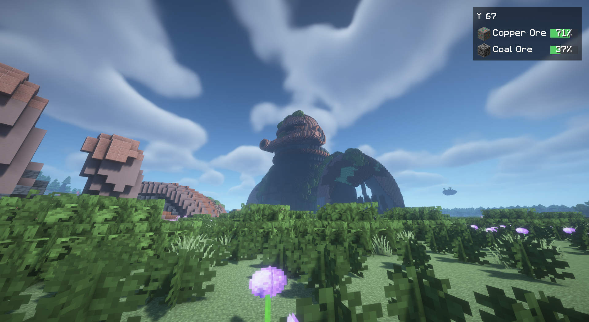

Titan Skull
01 / TITAN REMAINSA crowned head, left behind in the open landscape. Grass has long since grown between its remains.

Abandoned colossi, weathered skulls and ancient structures await in your Overworld. Follow their traces and discover what remains of a forgotten age.
The great Colossus is only the beginning. More traces await along coasts, in grasslands and among forests. Some are visible from afar. Others reward a closer look.
Browse each relic with the arrows or swipe its image. Select Play to cycle through its photos. Click an image to enlarge it.
A crowned head, left behind in the open landscape. Grass has long since grown between its remains.
A place to catch your breath beneath its spreading branches. The tree's aura strengthens you nearby.
The smaller of the two colossi. Explore its accessible openings and keep an eye out for useful remains.
The great Colossus in different landscapes, up close and from inside. Follow an expedition map to this unique site in your world.
A landmark visible from afar. Bring a brush and investigate the suspicious sand and gravel around it.
The walls are still standing, but nature has reclaimed its place. Another stop on your journey through the Overworld.
A blade rises from the weathered skull. Discover the second skull design in daylight, above the badlands and under a starry sky.
Captures from the 10 and 11 November 2026 playtests, including released betas and a development playtest. Minecraft Java 1.21.1, TerraVista Living World and shaders contribute terrain, vegetation and lighting. Gallery images are proportionally resized; older HUD overlays are cropped out. The original aspect ratio is retained. The selected Colossus title image still uses the original photograph with CSS framing. All screenshots and sources ↗
The relics add places to explore, archaeological finds and remnants of old technology to your Minecraft world.
Pack supplies and a brush. Archaeological finds may await around Obelisks. Brush suspicious blocks instead of breaking them.
A recovered expedition map can lead you to your world’s unique great Colossus. Use the map marker to navigate and bring supplies for a longer journey.
Machine Cores work as rechargeable fuel for furnaces. A Salvage Magnet attracts nearby, reachable dropped items. Both wear down and can be recharged or repaired.
Fabric or NeoForge, four Minecraft versions. Download the file that matches your installation.
Titan Relics is available on GitHub and mod platforms. The selector links directly to the matching Beta 3 GitHub download.
A beta to try out. Beta 3 is a public testing release. Sword Skull ground-contact issues are known; full Survival and long-session acceptance remain outstanding. The redesigned menus have not completed visual acceptance. Release notes and known limitations ↗
Availability of individual files on Modrinth and CurseForge can depend on platform moderation. All eight GitHub player files are in the linked Beta 3 release.
relics-1.0.0-beta.3+mc1.21.1.jar
SHA-256 checksums · Dependencies are not included.
Close Minecraft. Put Titan Relics and its matching dependencies in the mods folder. For multiplayer, install them on the server and every client.
Back up existing saves. Create a new Overworld with structure generation enabled to experience the current relic selection and new distribution rules.
Under "Create World → World → Relic generation", choose Expedition, Balanced or Discoveries. Discoveries offers more opportunities to explore. A nearby find is not guaranteed.
Existing worlds keep their saved generation rules, even in unexplored chunks. Updating does not move relics or refill shared loot. Installation, dependencies and existing-world notes ↗
Some combinations have been tested, but there is no general modpack, shader or performance guarantee. LOD and background generation can affect the result in particular. Before changing your setup, read the compatibility notes. The images show TerraVista Living World with shaders and do not establish compatibility with every pack.
Relics can be far apart. The selected distances do not guarantee a find. Terrain and biome checks can extend the journey. The distribution diagram in the menu is illustrative, not a seed preview.
Back it up first and stay on a supported Minecraft/loader target. The world keeps its saved settings. New Beta 3 distribution rules are not activated in older worlds, even for unexplored chunks. Downgrades and cross-loader conversions are not supported migration paths.
Yes. Original project contributions are under the MIT license to the extent the author holds the rights. No individual modpack permission request is needed. Retain copyright and license notices. Third-party works and visual references keep their own rights. License · Credits.
Use the GitHub bug report form. Include the mod, Minecraft and loader versions, your modpack, selected settings and reproduction steps. For generation issues, the seed and coordinates help. Attach the relevant log and remove private information before posting.